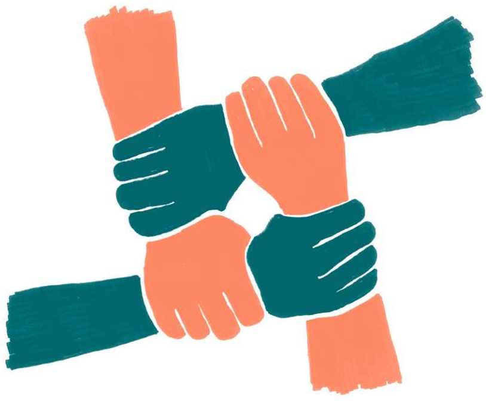

6.5 Strategická spojenectví
Síla klimatického hnutí nespočívá pouze v jeho velikosti, ale také ve schopnosti umět pro jeho myšlenku nadchnout ostatní a vytvářet koalice, které nebude možné ignorovat. Tvorba strategických spojenectví však není snadná.
Občanský aktivismus je v České republice – oproti jiným evropským zemím – dosud mnohdy považován za něco neběžného.1 To klimatickému hnutí komplikuje výchozí pozici jak na úrovni vyjednávání se spojenci, tak ve vztahu k veřejnosti.
Co je na západě považováno u starých lidí za něco normálního – někdo se ozve, podepíše petici, někde si jde stoupnout a řekne svůj názor, to u nás běžné není. Ostatně ani u mladých lidí.
Vojtěch Pelikán
Obecné odmítání aktivismu, ale i slabá občanská angažovanost vedou k tomu, že lidé nevěří, že něco mohou změnit, a proto raději nic neprosazují. Před klimatickým hnutím tak stojí výzva, jak se s takovými postoji vypořádat a veřejnost aktivizovat. Ukázat lidem, že cesta k řešení klimatické krize neleží jen v uvědomělé spotřebě jedince, ale hlavně v tom, jestli se všichni dokážeme spojit a společně prosazovat systémovou změnu.
Právě spojování lidí a dalších aktérů se věnuje tato kapitola. První část textu popisuje zejména nutnost dávkování celé problematiky klimatické krize do dílčích témat, k nimž lze najít spojence. Druhá část kapitoly obrací pohled dovnitř klimatického hnutí a sleduje neduhy a bariéry, které mu komplikují výchozí pozici pro navazování nových spoluprací. Konec je potom věnován reflexi, s kým konkrétně je možné strategické spojenectví navazovat.
Spojenci jsou, jen se musejí propojit
Klimatickým změnám, ochraně přírody či spravedlivé transformaci se v České republice věnuje celá řada lidí. Problematická je právě roztříštěnost sil, které samostatně usilují o proměnu nějaké oblasti, avšak izolovaně nemají dost silný hlas.
Pro klimatické hnutí je tedy velkou výzvou tyto hlasy spojovat a nasměrovat ke společným záměrům – jako se mu to do jisté míry daří u podpory obnovitelných zdrojů či kampaní proti uhlí. Období pandemie covidu-19 spoustu aktivit přeneslo výhradně do prostředí online komunikace, což nezbytně omezilo možnost zapojit se lidem, pro které online prostředí není přístupné. Zároveň se velmi omezilo působení klimatického hnutí ve veřejném prostoru a snížilo se množství příležitostí k formálnímu i neformálnímu setkávání. Přitom právě „v hospodě“ se často tvoří silná přátelství a vymýšlejí se revoluční myšlenky.
Musíte mít dostatek forem neplánovaných sdílení, pak teprve zjistíte, jak se kdo má a co potřebuje. Vy potřebujete zjistit, co kdo potřebuje a co ho trápí. Když to omezíte jen na určité cesty, třeba jen online, vypouštíte tím spoustu lidí a jejich starostí.
anonymní politoložka
Každé téma si zaslouží jiné spojence
Pro řešení tak komplexního problému, jako je klimatická krize, je stěžejní mít nadhled a pozorovat, jak se chová celý systém. Pokud však chce klimatické hnutí tento systém ovlivnit, musí hledat pákové body, ve kterých bude mít jeho působení největší efekt. Právě v těchto oblastech je nutné identifikovat klíčové aktéry a s nimi začít spolupracovat. Pro každé téma musí klimatické hnutí hledat takové spojence, jichž se oblast bezprostředně týká a kteří mají chuť na něm participovat.
Zásadní je, že není potřeba mít shodu se všemi aktéry na všem – klíčové jsou průniky, ve kterých shoda je. V rámci spolupráce pak mohou jednotlivé strany přinášet vlastní pohled a zkušenosti a vlastní metody práce, taktiky i komunikační kanály. Nelze však automaticky počítat s tím, že tito spojenci budou spolupracovat i v dalších tématech. Podstatné je vždy v daný okamžik identifikovat, s kým je vhodné navázat spolupráci a za jakým účelem. A samozřejmě také to, proti komu se společně vymezit.

Ať chceme nebo ne, veřejná diskuze má pro konkrétní témata tendenci vytvářet jejich konkrétní nositele nebo autority, kterým lidé věří a ke kterým se vztahují. Samotný odborný hlas z hnutí nemusí být vždy dost přesvědčivý nebo srozumitelný, a to zejména při řešení problémů na lokální úrovni. Klimatické hnutí by proto vždy mělo tyto autority na lokální úrovni najít a vtáhnout do řešení problému (např. starostky, místní aktivní občany, lokální zaměstnavatele apod.). Takový člověk může mít roli stmelovače a překladatele požadavků do srozumitelného jazyka.
Někteří lidé o klimatu ještě vůbec nepřemýšlejí, nedali si to do souvislostí. Můžou to být lidé, kteří mají nedůvěru v profesora z univerzity nebo nevládky. Když s vámi přijde někdo, kdo jim bude blíž, nějaký malý zemědělec, bude to přesvědčivější mluvčí a bude větší šance, že vás někdo začne poslouchat.
Ondřej Císař
Na dílčích řešeních lze najít shodu
Zvyšující naléhavost klimatické krize se nezbytně pojí s nárůstem ambicí v opatřeních, která by byla potřeba zavést. Navíc čím je téma komplexnější, tím větší počet aktérů ovlivňuje, a tím pádem do něj vstupuje větší množství různých zájmů. Komplexita tak paradoxně může celou diskuzi a navazování spojenectví paralyzovat nebo zcela znemožnit.
Přitvrzování nebo stavění svého zájmu do neustálého popředí a zvyšování požadavků je možná problém, který zabraňuje tomu, aby v naší společnosti došlo ke shodě.
Jiří Koželouh
Je rozdíl, jestli se vyjednává například o tématu obnovitelných zdrojů, celé energetice nebo třeba ještě abstraktnějším tématu snižování emisí. Průniky v zájmech se lépe hledají tam, kde jde jednoznačně popsat postoje a požadavky na možná řešení. Čím je problém užší, tím lépe se hledají spojenci, lépe se vyjednává a lépe se hledají styčné body. Na druhou stranu je potřeba brát zřetel na to, že se asi většina lidí shodne na důležitosti „ochrany přírody“. Problém však nastává ve chvíli, kdy je tomuto cíli nutné něco obětovat. A v ten okamžik je potřeba hledat konkrétní styčné plochy v zájmech různých aktérů.
Pro klimatické hnutí to znamená, že i když na jednu stranu musí kvůli naléhavosti situace prosazovat adekvátní požadavky, musí také vnímat potřeby potenciálních spojenců. Metaforické porcování slona na dílčí problémy tak zvyšuje šanci otevřít s dalšími aktéry diskuzi, najít průniky a prosadit část vlastní agendy. Výzvou je udržet přitom celkovou strategii koherentní a neztratit ze zřetele „celek“ pomyslného slona klimatické krize a nepřizpůsobovat se jiným sektorům společnosti příliš.
Spojení více aktérů má totiž potenciál způsobit změnu na systémové úrovni. Oproti snažení jednotlivců mají koalice větší sílu působit na struktury z více úhlů a mohou mít v očích společnosti větší legitimitu a získat podporu. Konkrétním příkladem může být novela o podporovaných zdrojích energie, při jejíž tvorbě se podařilo vytvořit koalici mezi obcemi, ekologickými organizacemi, podnikateli a částí progresivních politiků i energetického byznysu.
Klimatické hnutí, které vidí za své hranice
Navazování spojenectví vyžaduje velkou dávku trpělivost a vytrvalosti. Je potřeba budovat kvalitní vztahy. Proto nestačí udělat jednu akci, jednu schůzku, jednou otevřít dveře, ale je nutné poskytovat prostor k seznámení pravidelně a opakovaně. Zároveň je dobré příliš na lidi netlačit a dát jim prostor zapojit se do takové míry, kolik zvládnou.
Klimatické hnutí by nemělo zapomínat na vytváření vlastních struktur, které mu zapojování lidí a navazování vztahů s dalšími spojenci umožní. Kromě dobře vymyšleného procesu sdílení zkušeností novým lidem a vyhrazení členů a členek organizace přímo pro komunikaci s ostatními aktéry můžou hrát velkou roli solidární akce. Klimatické hnutí se může solidárně stavět za témata, která nejsou primárně o ochraně klimatu, ale podporují ve svém sociálním, kulturním či ekonomickém rozsahu řešení klimatické krize či spravedlivou transformaci. Tím se mohou otevřít dveře pro tvorbu širokých koalic.
Zbavit ochranu klimatu snobismu
Klimatické hnutí nejen při hledání spojenců naráží na bariéru, že je v České republice vnímáno jako výrazně městské (tj. že ekologické organizace sídlí a jejich příznivci se koncentrují zejména ve větších městech). Vzniká tak známý (a zbytečný) konflikt mezi městem a venkovem, v němž je téma ochrany přírody nebo řešení klimatické změny považováno za něco, co si můžou dovolit řešit pouze privilegovaní lidé – s dostatečným finančním, kulturním i kapacitním kapitálem.
Na venkově znamená klimahnutí děcka z města, co o přírodě nic neví, samy do ní nechodí a něco nám o tom povídají.
Vojtěch Pelikán
Před klimatickým hnutím stojí výzva, jak se z tohoto podezření ze „snobismu“ vymanit a přiblížit se tématům, která nebudou tolik odtržena od běžného života. Jednou z cest může být vědomá filtrace témat, která jsou vnímána jako stěžejní pro „městské liberály“, ale pro vesnici uprostřed Vysočiny nic neznamenají. Další cestou může být užší napojení na lokální organizace a regionální hnutí, které na lokální úrovni působí, a rozvíjet s nimi dialog.
Používat jazyk, který je lidem blízký
Různé skupiny lidí používají k popisu stejného problému různý jazyk. Lidé o věcech mluví odlišně a také o nich jinak přemýšlejí. Proto je prvním předpokladem k navázání spojenectví překonání jazykové bariéry. Jazyk, který v sobě nese spoustu cizích slov nebo je vyloženě oborový (žargon), znemožňuje vzájemné porozumění.
Samozřejmě nejde dát klimatickému hnutí obecnou poučku, jak by mělo s lidmi mluvit, protože vhodné pojmy se budou různit podle lidí, k nimž se mluví. Vhodnou cestou, jak rozpoznat správnou terminologii, na kterou lidé uslyší, je poslouchat je – třeba na místních zasedáních, v diskuzích, při akcích apod. Je třeba pracovat na schopnosti klimatického hnutí naslouchat ostatním, vnímat lidi jako partnery, nejednat s nimi paternalisticky a nesnižovat jejich osobní zkušenost. A obzvláště v uhelných regionech, které jsou dlouhodobě shazovány jako méněcenné, je důležité podporovat v lidech jejich vztah a uznání k místu, kde žijí.
Klíčová otázka je, jak v tom procesu lidem nabízet pocit uznání a partnerství. Skrze něco, co je pro ně důležité – konkrétní věci, co aktuálně potřebují, což může být třeba práce v místě bydliště nebo dobrá škola pro děti.
Lucie Trlifajová
Společnou řeč komplikují i takzvané kulturní války, v rámci nichž nasedá téma řešení klimatické krize na jiná kulturní témata, která štěpí společnost (LGBTQ+, uprchlická migrace apod.). Pokud to pro klimatické hnutí neznamená zásadní problém, není nutné jít s potenciálními spojenci do konfliktu v otázkách, které nejsou hlavním cílem spolupráce. Je totiž mnohem jednodušší spojit síly při prosazování klimatických cílů a nesnažit se přitom vůči sobě vymezit v jiných hodnotových tématech. Podobné konflikty v důsledku znemožňují šance pro navázání partnerství.
S kým spojenectví navazovat
Průřezovost tématu klimatické krize a spravedlivé transformace umožňuje klimatickému hnutí spolupracovat s mnoha partnery. Jedním z kroků plánování strategie by určitě mělo být mapování, kdo se danému tématu věnuje a jakým způsobem. Tím je možné odhalit řadu aktérů, se kterými klimatické hnutí může navázat dialog či rovnou spolupráci.
Při navazování spojenectví je vhodné využívat zkušeností jiných organizací klimatického hnutí. Vyplatit se může vzájemné sdílení například v rámci Klimatické koalice, při němž je možné prodiskutovat hlouběji klady a zápory určitých druhů partnerství. Před samotným navázáním kontaktu s potenciálními spojenci je důležité udělat si kvalitní rešerši a reflektovat aktuální situaci. Při tvorbě partnerství bude vždy záležet na konkrétních okolnostech a ochotě vzájemného porozumění.
Kraje, města a obce
Propojení s lokálními samosprávami je naprosto klíčové podle expertů a expertek i samotného klimatického hnutí. Města a obce lze vnímat jako specifickou sféru občanské sebeorganizace, která má velkou sílu prosazovat opatření lokálně, ale díky koalicím a asociacím (Sdružení místních samospráv, Spolek pro obnovu venkova nebo Svaz měst a obcí apod.) také na celostátní strukturální úrovni.
Celá řada změn, jež budou mít dopad, lze provést právě na úrovni měst a není potřeba se vždy spoléhat na stát nebo Evropskou unii. Už nyní jsou to právě některé samosprávy, které umějí díky úzkému kontaktu s lidmi zavádět opatření, jež jsou v souladu s potřebami místních. A také je umějí do toho procesu vtahovat.
S lokalizací produkce klidně mohou začít jednotlivé obce, svazy obcí nebo kraje. To se mi zdá jako začátek, který lidé pocítí a mohou ho vnímat pozitivně. Bude to změna, která ovlivní jejich každodenní skutečnost.
anonymní ekonomka
Větší prostor pro navazování partnerství se nabízí v městech a obcích, které veřejně deklarují, že je pro ně klimatická změna tématem. To mohou být buď progresivnější samosprávy, nebo ty, které už změny pociťují v podobě sucha, povodní a podobně. Lidi, kteří jsou nakloněni řešit otázky klimatu nebo spravedlivé transformace, lze ale najít také v existujících strukturách krajů, měst i obcí – mohou to být starostové a starostky nebo třeba zastupitelky či úředníci. V případě komunálních politiků je rovněž vhodné dívat se po lidech, kteří jsou například už podruhé zvoleni a mají určitou politickou kapacitu postavit se za společná témata.
Místní samosprávy ovšem čelí jednomu zásadnímu problému – jsou extrémně vytížené. Málo času řešit strategické otázky způsobuje, že některé obce nejsou příliš aktivní. Potřebují vnější impulz, třeba právě od klimatického hnutí nebo nějaké občanské iniciativy, aby se zapojily do řešení dílčích otázek. Impulzem tak mohou být například dobře připravené podklady, které jim usnadní rozhodování, ale hlavně samotné zapojení.
Trendem je komunitní a obecní energetika a její možnosti narůstají technicky i ekonomicky. A obce na to slyší, chtějí ji. Takže do budoucna doufejme, že se stanou významnějším hráčem.
Jiří Koželouh
Místní akční skupiny a lokální spolky
Místní akční skupiny (dále jen MAS) jsou nezávislým společenstvím občanů, veřejné i soukromé sféry a občanských organizací, které usiluje o rozvoj svého regionu a využívání finančních zdrojů ze státních i evropských programů.2 Vedlejším efektem je často dlouhodobá spolupráce a síťování nad tématy místního udržitelného rozvoje, například v oblasti cirkulární ekonomiky nebo přechodu na šetrnější formy zemědělství. Motivace vzniku byla často finanční – možnost přes MAS čerpat prostředky z evropských fondů – to ale v mnohých případech vedlo k vytvoření participativní strategie a lokální struktury, o kterou se dá dobře opřít v klimatických tématech.
MAS – jako možný partner pro klimatické hnutí – mohou být oproti obcím aktivnější. Kromě získávání zdrojů na rozvoj kvality života na venkově pořádají celou řadu akcí, a především mají navázané vztahy na různé sektory. V některých případech také slouží jako platformy pro zapojování občanů.
Na lokální úrovni se také nabízí zapojení zemědělců, lesníků, zahrádkářů, nebo dokonce i některých myslivců, tedy lidí, kteří pracují s lesními ekosystémy a do určité míry vidí problematičnost průmyslových postupů a následný devastující dopad na krajinu. Také lze přemýšlet o občanských spolcích a aktivitách typu mateřské kluby, kluby seniorů či umělecká sdružení. V neposlední řadě lze na místní úrovni uvažovat i o spolupráci s dobrovolnými hasiči, bioprodejnami, bezobalovými obchody či s obchody se zdravou výživou nebo třeba s veřejnými knihovnami3.
Je úplně jedno, jak přizvete do řešení lidi v regionech. Musíte to dělat. Uděláte to desetkrát a několikrát to nevyjde, ale přijdete na to.
Vladimír Špidla
Podniky a byznys
Objevování partnerství v soukromé sféře je ze strany klimatického hnutí velmi opatrné a rozpačité. Neexistuje jednoznačná odpověď na to, s jakým byznysem jsou partnerství možná a jak by měla vypadat.
Na jednu stranu prochází svět byznysu skutečně určitou proměnou, v níž ty největší korporace či finanční skupiny dávají hlasitě najevo, že se směřováním k udržitelnosti souhlasí a chtějí se na něm podílet. Na druhou stranu se setkáváme s celou řadou projektů, které jsou vyloženě greenwashingem (klamavou ekologickou reklamou) a v nichž je udržitelnost pouze marketingovým nástrojem pro odvedení pozornosti od primárních zdrojů znečištění (typickými příklady jsou okázalé výsadby stromů uhelnými firmami nebo třeba „zelené investice“ bank, které přitom řádově větší množství peněz investují do neudržitelných aktivit). Zásadní je u spolupráce se soukromou sférou konkrétní situace: je třeba spíše rozlišovat než zobecňovat.
Prostor ve spolupráci se soukromou sférou lze při troše zjednodušení rozdělit do čtyř úrovní.
Lokální, malé a střední podniky jsou velkou příležitostí pro klimatické hnutí, protože tvoří většinu ekonomické aktivity a zaměstnanosti v České republice. Evropské fondy jsou příležitost, jak jim ukázat výhody spojené s ekologickou transformací a získávat je pro ni.4 I bez dotací se ovšem u malých a středních podniků skýtá potenciál k navazování koalic – i díky jejich snazší dosažitelnosti a vlivu na prostředí, v němž fungují.
Příkladem asociací firem se zájmem o udržitelnost může být podnikatelsko-profesní organizace Změna k lepšímu5, jejímž cílem je usilovat o udržitelnější a čistší ekonomiku, nebo komunita Slušná firma6, která se zasazuje o změnu způsobu podnikání od kumulace zisku a externalizace škod k obecné prospěšnosti a zodpovědnosti. Tyto asociace mají potenciál vytvářet protitlak k veřejnému působení konzervativních podniků sdružených v Hospodářské komoře nebo Svazu průmyslu a dopravy a mohou být dobrým partnerem pro mapování zájmů a potenciálu pro spolupráci v podnikatelské komunitě.
„Zelený“ byznys představuje firmy, v nichž je řešení klimatických změn přímo předmětem jejich podnikání nebo které si v rámci organizace uvědomují závažnost situace a snaží se jít změnám naproti (modernizací, inovacemi atp.). Tito aktéři jsou pak potenciálním partnerem při prosazování opatření na systémové úrovni, protože změna představuje pro jejich byznys příležitost, na kterou jsou připraveni.
Velký a nadnárodní byznys je typicky tradiční průmysl či nadnárodní společnosti a mohou být v prosazování změn jak silným protivníkem, tak spojencem. U nadnárodních firem je velkou výhodou, že je jejich „matky“ v cizině často tlačí do mnohem zelenějších přístupů než jejich management v České republice. Protože velké korporace mají moc, i malé kroky mohou mít obří dopad. Jejich motivací ale bude především udržet si své postavení, což často vede ke greenwashingu.
Průmysl potřebuje kontinuální a stabilizovaný přechod a do toho je ochoten investovat velké peníze. Má své různé zájmy, ale jeho obecný zájem je, že nechce, aby se společnost pod tlakem klimatické změny rozpadla.
Vladimír Špidla
Vlivní lidé, politici a političky
Zejména klimatické hnutí cítí potřebu oslovovat a spojovat se s vlivnými spojenci. Vidí potenciál u partnerství s politickými stranami či hnutími (zejm. Zelení, Budoucnost a Pirátská strana), politiky a političkami (od lokální po evropskou úroveň), ministry a ministryněmi, poslanci a poslankyněmi. Také je vidět chuť po větším propojení klimatického hnutí s levicovými uskupeními – zejména proto, že se zde nachází průnik hodnotový, který usiluje o to, aby transformace energetiky proběhla spravedlivě.
Výhradní zaměření na levicové subjekty však může být problematické, neboť jejich pozice je v současném stavu výrazně oslabena. Je proto potřeba hledat cesty také k politickým stranám, které nemusejí být primárně levicové. Mobilizace aktérů, kteří už nějaký vliv mají, má pak větší šance k úspěšnému prosazování opatření a změn.
Vybrat a vytipovat části byrokracií, se kterými se dá pracovat a aktivně tam lobbovat. Otázkou je, jak získat nerozhodnuté části byrokracie a ty, se kterými se dá pracovat a které nemají úplně radikální představy.
Lukáš Lehotský
Odbory
K odborům se od expertů a expertek i z řad klimatického hnutí upínají velké naděje. Na první pohled se odbory jeví jako logický partner v boji za spravedlivou transformaci a klimatickou spravedlnost, neboť společný průnik se nachází právě v sociální oblasti a ve snižování negativních dopadů. Otázkou ovšem je, jak se k odborům s touto vizí dostat. Kvůli lobby i snaze zdiskreditovat nutnost transformace hrozí, že se odbory postaví za stávající struktury – z obavy, co ve skutečnosti změna přinese.
Cílem klimatického hnutí by tak mělo být navázat s odbory vztah, otevírat spolupráci a ukázat, že hnutí usiluje o podobné cíle. Je vhodné brát také v potaz velkou rozmanitost odborů v různých sektorech a hledat například partnery nejdříve tam, kde neexistují dlouholeté spory. V opačném případě hrozí, že se z odborů stane rezistentní síla odmítající, či dokonce blokující v otázkách klimatu další postup. Vzhledem k jejich síle je vhodné tuto možnost nepodceňovat.
Zhruba deset let snah i navázání dialogu s odbory už také má své výsledky. V roce 2021 například proběhla první společná tisková konference energetických odborů a ekologických organizací k výsluhovým příspěvkům pro pracovníky uhelné energetiky.7
Školy a mladí lidé
Studentské stávky hnutí Fridays For Future v uplynulých letech způsobily vlnu nadšení, že se hlas klimatického hnutí rozšířil o další skupinu, která se dokáže mobilizovat a srozumitelně formulovat své obavy i požadavky. V mladých lidech je velký potenciál k aktivaci i zapojení, ovšem neměli by být jedinou skupinou, na niž se bude klimatické hnutí spoléhat.
Ekologické hnutí spoléhá na mladé. Což je přelévání zodpovědnosti na lidi, kteří nemají reálnou moc. A má to spoustu problematických aspektů.
Vojtěch Pelikán
V otázce zapojení mladých lidí lze také mluvit o dlouhodobějším a systematičtějším přístupu, a to skrze školy a vzdělávací instituce. Reforma školství nemá v České republice příliš silný hlas, ovšem na místní úrovni u jednotlivců lze najít vyučující, pro které je téma klimatické změny důležité a dokážou je do vlastní výuky i v rámci omezení dostat. Pro pedagogy vyučující na druhém stupni základních škol například vznikl pod záštitou organizace Člověk v tísni kurz zaměřený na klimatickou změnu.8
Církve
Potenciál spojenectví mezi církvemi a klimatickým hnutím v České republice je velký, a sice na úrovni hodnotové (církve se přinejmenším formálně k ekologickým ideálům hlásí) i materiální (vlastní například 5,32 % lesních ploch v ČR, tj. 139 119 ha)9. Přesto tento vztah spíše nefunguje. Globálně je přitom v dnešním křesťanství patrný vcelku významný „ekologický obrat“.
Příkladem za všechny je encyklika Laudato si’ („o péči o společný domov“), již v roce 2015 vydal papež František a která mimo jiné naléhavě volá právě po ochraně našeho planetárního „domova“. Slova papeže se ovšem do prostředí české katolické církve jako celku dosud příliš nepromítla. Projevy tak lze najít spíše u jednotlivců na lokální úrovni10, kde jsou farnosti kulturně-společenskými centry a téma ochrany přírody zohledňují.
V rámci vyšších pater katolické církve se naopak objevuje vymezování vůči ekologickému či klimatickému hnutí na základě kulturních válek (je viděno jako součást širší progresivní fronty, která ohrožuje tzv. tradiční hodnoty). V Českobratrské církvi evangelické pak propojení se záměry klimatického hnutí existuje výrazněji. Konkrétním příkladem průniků může být etický kodex pro investování prostředků, který vylučuje vkládání financí do neetického podnikání či do aktivit, které vedou k poškozování planety (včetně těžby a spotřebovávání fosilních paliv)11.
Když církvím u nás díky restitucím přistane kus krajiny, tak je většinou nenapadne starat se o ni ekologicky. Kněží v tom nejsou vzdělaní, nemají s tím zkušenosti. Klimatické hnutí může nabízet cesty, jak se k tomu propracovávat.
Vojtěch Pelikán
Občanské organizace
Mezi téměř samozřejmé spojence patří také další občanské organizace, ačkoli i zde je stále prostor pro rozvoj partnerství. V tématu klimatické změny se sdružováním neziskových organizací věnuje Klimatická koalice, ovšem další spojence je možné hledat napříč různými tématy, jež s klimatickou krizí různě souvisejí a překrývají se: od lidských práv přes svět práce a sociálních věcí až po vzdělávání.
Občanské organizace různého typu si ve svých strukturách často nesou značné objemy znalostí o tématech, jimiž se zabývají. Prosadit je do tvorby politik není ovšem často jednoduché. Výzvou pro neziskové organizace je proto hledat způsoby, jak se více prosazovat ve veřejném prostoru a zvyšovat povědomí o vlastní odbornosti. Jedna z cest může vést skrze diskuzi s médii, novináři a novinářkami a uvědomění, že k tématům mimo politiky, podnikatele a vědce mohou zvát také relevantní osoby z občanských organizací.
Jak novináři, tak politici mají pocit, že neziskový sektor je tu od toho, aby vařil polévku lidem bez domova a pomáhal ve zdravotních službách. A to, že má mít silné slovo při utváření veřejných politik, tu vůbec není zakořeněné. A je potřeba to změnit.
Petra Kolínská
Tipy pro klimatické hnutí
Komunikace
- Je potřeba hledat kanály komunikace, které umožní diskuzi, neplánované vzájemné sdílení a zapojování lidí. Souběžně je nutné myslet na to, zda vybraná forma komunikace někoho ze zapojení nevědomě nevylučuje.
- Rozdrobení problémů spojených s klimatickou změnou na dílčí, užší témata může klimatickému hnutí pomoci najít nové spojence – třeba i pro každé téma odlišné. Výzvou je přitom neztrácet ze zřetele systémové cíle a propojení dílčích témat.
- Zásadní je, že není potřeba najít shodu se všemi aktéry ve všech otázkách – klíčové jsou průniky, v nichž shoda je.
- Klimatické hnutí by při řešení lokálních problémů vždy mělo hledat místní autority a vtáhnout je do řešení problému (např. starostky, místní aktivní občany, lokální zaměstnavatele apod.).
- Přestože klimatické hnutí musí kvůli naléhavosti klimatické krize prosazovat adekvátní požadavky, je nutné, aby také vnímalo potřeby potenciálních spojenců. Současně je nutné mluvit jazykem, který je lidem blízký, aby sdělení nezněla povýšeně nebo složitě.
- Vyhnutí se kulturním válkám sníží třecí plochy a podpoří diskuzi ve společném úsilí. Pokud to pro klimatické hnutí neznamená zásadní problém, není nutné jít s potenciálními spojenci do konfliktu v otázkách, které nejsou hlavním cílem spolupráce.
Příležitosti
- V místech, kde lidé sami pociťují dopady změn klimatu, je vhodné podporovat je v aktivismu a občanské angažovanosti skrze lokální témata a problémy.
- Roztříštěné síly a hlasy různých aktérů usilujících o podobné cíle je vhodné spojovat. Klimatické hnutí se může solidárně stavět za témata, která nejsou primárně klimatická, ale podporují ve svém sociálním, kulturním či ekonomickém rozsahu řešení klimatické krize či spravedlivou transformaci.
- Vyplatit se může vzájemné sdílení například v rámci Klimatické koalice, při němž je možné prodiskutovat hlouběji klady a zápory určitých druhů partnerství.
- Klimatické hnutí by mělo využít dotací na komunitní obecní energetiku a navázat spojenectví s městy a obcemi. Ty mají prostřednictvím asociací hlas i na státní úrovni.
- Evropské fondy mohou být příležitostí, jak navázat spolupráci s místními malými a středními podniky a ukázat jim výhody spojené se spravedlivou transformací. Pomoci v tom může také spolupráce s různými asociacemi firem, které se zajímají o udržitelnost.
- Pro některé aktéry může být výhodné využít vlivu velkých firem a jejich zájmu přizpůsobit se klimatickým politikám a zůstat funkční.
Hrozby
- Reálnou hrozbu představuje pokračování či objevení nové pandemie, která dále omezí možnosti setkávání a podepíše se na snižování občanské angažovanosti lidí.
- Při navazování spojenectví může být složité udržet strategii jednotlivých aktérů i klimatického hnutí jako celku konzistentní a neztratit ze zřetele systémový pohled na problematiku a nutné změny.
- Hledání partnerů mohou blokovat kulturní války, například konflikt mezi městem a venkovem, kde je téma ochrany přírody nebo řešení klimatické změny považováno za něco, co si mohou dovolit řešit pouze privilegovaní lidé.
- Průmyslová lobby i politická snaha o diskreditaci nutných klimatických opatření zahání do kouta odborové organizace a hrozí, že ty se budou k nutným změnám stavět odmítavě.
- Spolupráce s byznysem, který se bude muset proměnit na udržitelnější, ale v popředí má hlavně své vlastní finanční zájmy, může zdiskreditovat klimatické hnutí nebo zpomalovat nutnou systémovou změnu.
O čem byla tato kapitola
- Pro úspěch klimatického hnutí je nezbytné vytvářet spojenectví a aktivizovat větší množství lidí. To však komplikuje obecně nízká občanská angažovanost a v době pandemie také málo příležitostí k setkávání.
- Pokud chce klimatické hnutí prosadit systémovou změnu, musí identifikovat pákové body a v těchto oblastech hledat klíčové spojence. S potenciálními partnery není nutné být ve všem zajedno, ale spíše hledat místa shody. Průniky v zájmech se lépe hledají tam, kde lze jednoznačně popsat požadavky na možná řešení společných problémů.
- Pro navazování vztahů je potřeba budovat specifické struktury přímo v klimatickém hnutí a naslouchat ostatním. Podstatné je překonávat jazykové i kulturní bariéry. Při navazování spojenectví je důležité dělat hloubkové rešerše a reflektovat aktuální situaci i historické pokusy o spolupráci.
- Hlavními partnery mohou (mimo jiné) být kraje, města a obce, místní akční skupiny a lokální spolky, podniky a byznys, vlivní lidé, politici a političky, odbory, školy a mladí lidé, církve a samozřejmě také občanské organizace.
Poměrně opatrné postoje k aktivitám považovaným za „aktivistické“ vyjadřuje výrazná část české veřejnosti specificky u otázky klimatu. Viz: KRAJHANZL a kol. České klima 2021: Mapa českého veřejného mínění v oblasti změny klimatu. Dostupné z: enviro.fss.muni.cz/ceskeklima2021. ↩︎
Místní akční skupiny. Dostupné z: nsmascr.cz. ↩︎
Viz projekt Udržitelnost v knihovnách [online]. Dostupné z: udrzitelna.knihovna.cz. ↩︎
Pro přehled evropských fondů týkajících se ekologické transformace viz: Politika ochrany klimatu v Česku: slova ztracená ve větru [online]. Dostupné z: www.cde-org.cz.pdf. ↩︎
Změna k lepšímu [online]. Dostupné z: www.klepsimu.cz. ↩︎
Slušná firma [online]. Dostupné z: www.slusnafirma.cz. ↩︎
Dvě třetiny lidí podporují výsluhové dávky pro uhelné horníky a energetiky. Odbory a ekologické organizace žádají spravedlivou transformaci. *Dostupné z: www.greenpeace.org. ↩︎
KLIMATICKÁ ZMĚNA: Online kurz pro pedagogy 2. stupně ZŠ a SŠ. Dostupné z: kurz-klimazmena.clovekvtisni.cz. ↩︎
Zpráva o stavu lesa a lesního hospodářství České republiky v roce 2020. Dostupné z: eagri.cz.pdf. ↩︎
V Česku vznikla také iniciativa angažovaných věřících: LAUDATO SI: Malými kroky k ochraně přírody [online]. Dostupné z: laudatosi.cz. ↩︎
Investiční kodex ČCE. Dostupné z: ustredicce.e-cirkev.cz. ↩︎